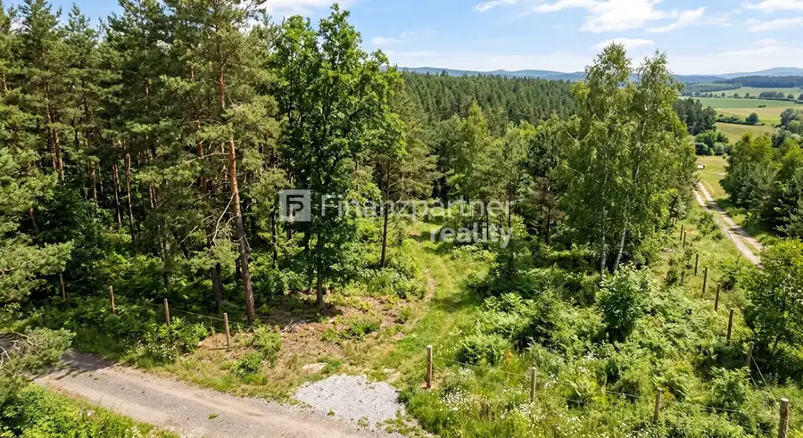

Znížená cena!!(F155-12-REMAE) 3 izbový rodinný dom Kľúčovec
Kľúčovec
- StavPôvodný stav
- VlastníctvoOsobné
O nehnuteľnosti
Finanzpartner reality exkluzívne ponúka na predaj: Rodinný dom s obrovským potenciálom v obci Kľúčovec blízkosti (pri Veľkom Mederi a Győri)!Hľadáte rozsiahly pozemok s domom, ktorý si môžete prerobiť presne podľa svojich predstáv? Ponúkame na predaj starší rodinný dom v pôvodnom stave v tichej obci Kľúčovec. Táto nehnuteľnosť je ideálna pre investíciu, developerský projekt, alebo pre rodinu s víziou.Kľúčové informácie o nehnuteľnosti:Pôvodný stav: Dom z roku 1965 je v pôvodnom stave a vyžaduje kompletnú rekonštrukciu, čo vám dáva absolútnu slobodu pri plánovaní.Veľký pozemok: Súčasťou ponuky je rozsiahly pozemok s výmerou 23 árov (2300 m²), ktorý poskytuje nekonečné možnosti.Zastavaná plocha domu: Dom má úžitkovú plochu približne 100 m².Lokalita: Kľúčovec – obec s výhodnou polohou:Blízkosť Veľkého Medera: Rýchla dostupnosť do mesta s termálnym kúpaliskom a kompletnou občianskou vybavenosťou.Blízkosť Győru (Maďarsko): Výborné spojenie s maďarským mestom, čo ocenia pendleri alebo milovníci nákupov.Potenciál pozemkuZáhrada snov: Dostatočná plocha na veľkú záhradu, bazén, ovocný sad alebo hospodárske budovy.Investícia/Development: Vďaka svojej veľkosti je pozemok zaujímavý aj pre developerský zámer (po overení územného plánu).Súkromie: Rozsiahly pozemok zaručuje maximálne súkromie.Ak vás táto ponuka oslovila, alebo máte nejaké otázky, neváhajte ma kontaktovať, rada si to s Vami osobne prídem pozrieť!Cena: 65.000€Naše ceny sú vrátane provízie za kompletný servis a sú schválené majiteľom.Telefón: 0908 797 740E-mail:renata.markuszekova@finanzpartner.sk
Parametre
| Druh | Rodinný dom |
|---|---|
| Dátum zverejnenia | 29. 9. 2025 |
| Plocha pozemku | 0 m² |
| Stav nehnuteľnosti | Pôvodný stav |
| Typ | Predaj |
| Vlastníctvo | Osobné |
| Úžitková plocha | 0 m² |
Kde to je


Mohlo by Vás zaujímať
 BytNové10
295 000 €F173-113REMAE , 3izbový byt záhradou Dolný Štál
Dolný Štál
3-izbový
VIDEO PREZENTÁCIAOdkaz TU: youtube.com/watch?v=4jsmGTSn2-A Jedinečné bývanie s atmosférou rodinného domu, kde sa spája luxus, súkromie a mimoriadne…
BytNové10
295 000 €F173-113REMAE , 3izbový byt záhradou Dolný Štál
Dolný Štál
3-izbový
VIDEO PREZENTÁCIAOdkaz TU: youtube.com/watch?v=4jsmGTSn2-A Jedinečné bývanie s atmosférou rodinného domu, kde sa spája luxus, súkromie a mimoriadne…
 PozemokNové6
143 000 €ZNÍŽENA CENA!!!Pozemok na stavebné účely v obci Blatná na Ostrove (F102-014REMaE)
Blatná na Ostrove
1680 m²
Na predaj: Stavebný pozemok na dvojdom v Blatnej na Ostrove – s povolením a plánom!Hľadáte ideálne miesto na výstavbu vášho nového…
PozemokNové6
143 000 €ZNÍŽENA CENA!!!Pozemok na stavebné účely v obci Blatná na Ostrove (F102-014REMaE)
Blatná na Ostrove
1680 m²
Na predaj: Stavebný pozemok na dvojdom v Blatnej na Ostrove – s povolením a plánom!Hľadáte ideálne miesto na výstavbu vášho nového…

PozemokNové2 10 000 €F174-014REMAE pozemok na predaj Potônske Lúky Potônske Lúky Hľadáte špeciálne alebo najmä poľnohospodársku pôdu, investíciu do pôdneho fondu priestor na rekreáciu a prírodné aktivity v okrese Dunajská…